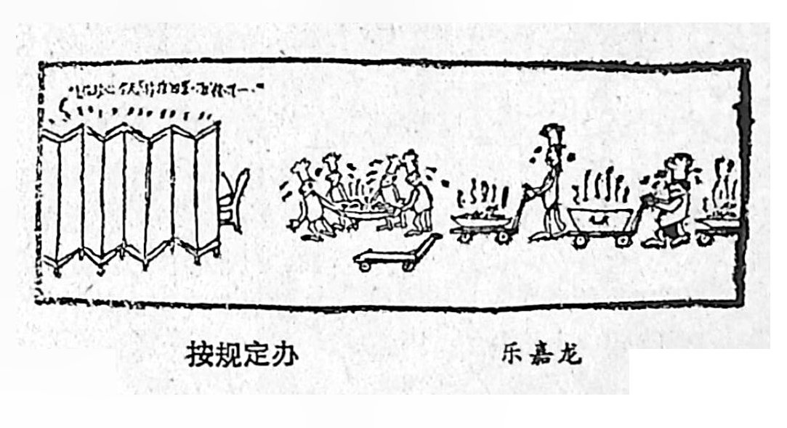

乐嘉龙 《人事》1988年第10期（总第37期），第47页
按规定办
Doing It by the Rules
- Text in the drawing
- （屏风后的说话声，难以辨认）
(speech from behind the screen; illegible) - Description
- Cooks in tall hats wheel trolley after trolley of steaming dishes toward a tall folding screen, behind which someone is talking. The speech is too small to read in the scan.
- Note
- The cartoon appears to mock official banquets held behind screens while leaders claim to follow the rules restricting eating and drinking at public expense; the illegible speech leaves the exact joke uncertain.
- Artist
- Le Jialong 乐嘉龙
- Published in
- 《人事》1988年第10期（总第37期）, p. 47
- Themes
- Gifts and banquets · Formalism

Cite
Le Jialong, “按规定办” [Doing It by the Rules], Renshi (Personnel) 《人事》, 1988, no. 10, p. 47.